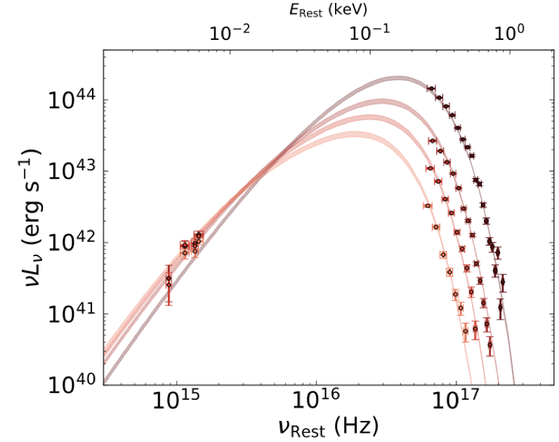
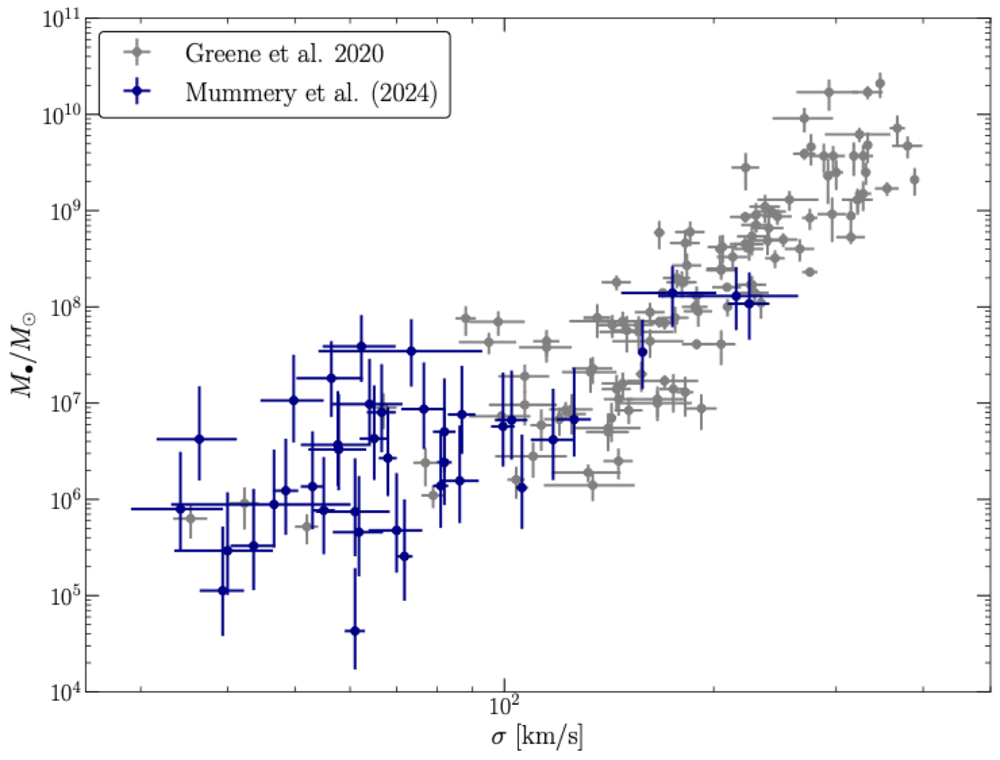
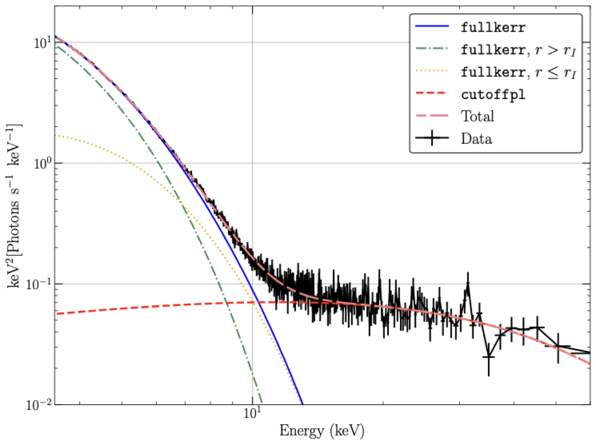
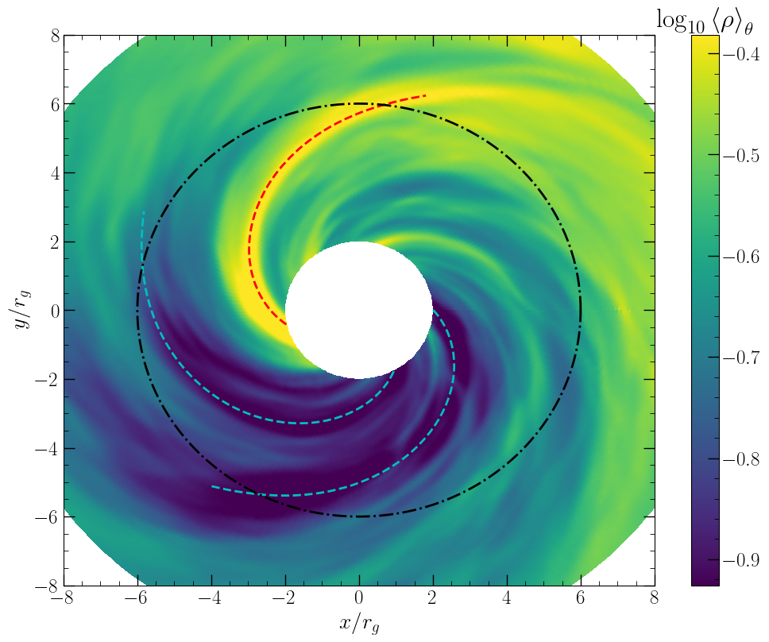
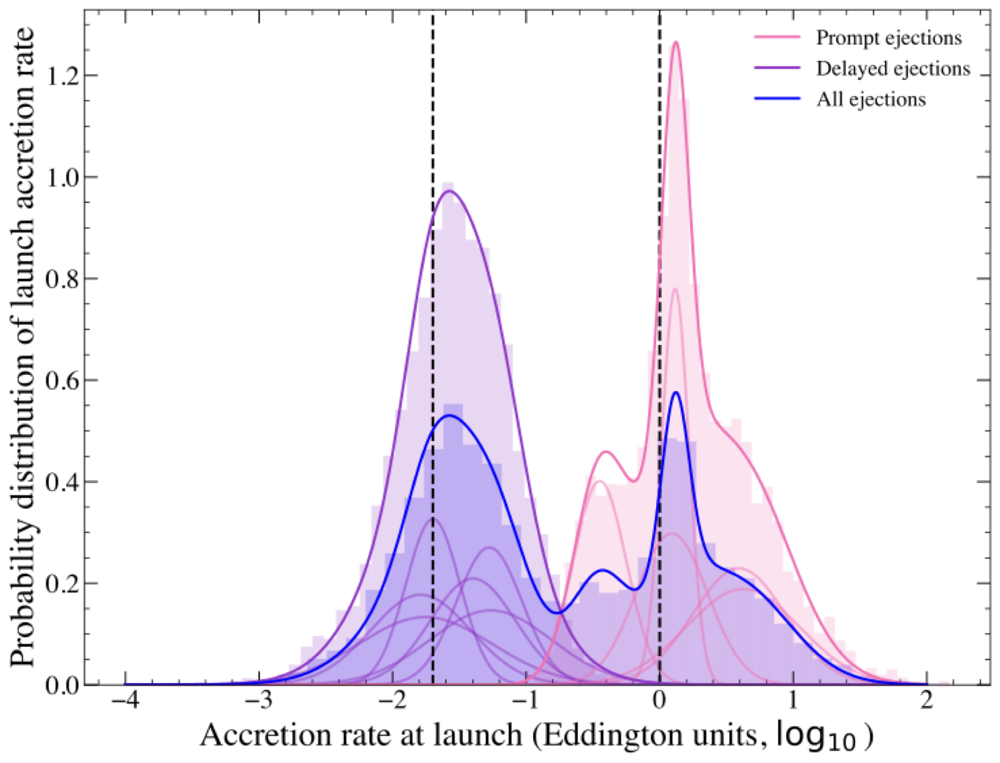

Research
I am interested in how gas falls onto a black hole, how that flow radiates, and what the light can tell us about mass, spin, and the spacetime. Standard thin-disc theory is built for a flow that has already settled into a quiet, circular, radiatively efficient state. Many of the discs we can actually observe — tidal disruption events, X-ray binary outbursts, changing-look AGN — are not in that state. They turn on, spread, change accretion rate, and (sometimes) launch outflows, all in the strong-gravity region where Newtonian models fail.
Much of my work is pen-and-paper disc theory, but always with the goal that it must connect with real data — either X-ray and UV/optical observations, or numerical simulations (or ideally both!). Below I list some of the questions I am interested in at the moment.
- Can we constrain black hole demographics with tidal disruption events?
- Is the plunging region dark?
- Is black hole accretion scale invariant?
- How do black hole accretion flows evolve far from inflow equilibrium?
These four questions are nowhere near all I am working on. For more, papers are on Publications, codes on Software.
Can we constrain black hole demographics with tidal disruption events?
Most of what we know about supermassive black hole masses comes from the small fraction of galaxies that are close enough to resolve their impact on stellar dynamics. Quiescent black holes below about 107 M⊙ — the regime that decides how black holes and galaxies grew together — are largely invisible.
A tidal disruption event gives us the rare opportunity to study these previously quiescent black holes, and by utilising time-dependent disc theory we have demonstrated that we can constrain black hole masses at the ~0.3 dex level, allowing us to add tens of low-mass black holes to the M–σ relation, and search for (and discover) intermediate mass black holes.


- Mummery & Balbus (2020) — we showed that the late-time UV and X-ray evolution of a TDE is that of a cooling relativistic disc. This sets the scene for using the late-time emission as a route to black hole mass measurements through light curve and spectral fitting.
- Mummery et al. (2024) — we turned this into a practical tool for the community: relativistic TDE discs obey scaling relationships set by the black hole mass, so that observations at late times (which we get for free with all-sky optical surveys) can be used to weigh the black hole.
- Those models are now widely used by others — for example Nicholl et al. (2024, Nature), where the size of the disc in AT2019qiz underpins the interpretation of its quasi-periodic eruptions as disc–EMRI collisions.
- Many of the key advances in the last few years in this field were driven by my student Muryel Guolo while he was at Johns Hopkins (now a member at the IAS), including †Guolo & Mummery (2025) on ASASSN-14li and HLX-1, †Guolo, Mummery, van Velzen et al. (2025) on compact TDE discs, and †Guolo, Mummery, van Velzen et al. (2026) on the off-nuclear TDE AT2024tvd.
Some other papers of possible interest: luminosity functions · TDEFLARE · tidalspin
Is the plunging region dark?
Black hole spin measurements rest on a key assumption: the gas stops radiating once it crosses the innermost stable circular orbit, so that the “inner edge” of the disc traces the ISCO and therefore the spin. If that assumption is wrong, a large body of electromagnetic spin measurements may be (perhaps severely) biased, which will have wide-ranging implications (for example with comparison to the spins from LIGO–Virgo merging black holes).
Modern general-relativistic magnetohydrodynamical simulations suggest that this assumption is wrong. This motivates the development of analytical theories which can reproduce these GRMHD simulations, and are able to be fit to data.


- Mummery & Balbus (2022, PRL) and Mummery & Balbus (2023) — we derived exact geodesic inspirals from the Kerr ISCO, and adiabatic thermodynamic solutions for the plunging flow, giving an analytic theory that can be compared directly with GRMHD.
- Mummery, Ingram, Davis & Fabian (2024) — we fitted the soft-state spectrum of MAXI J1820+070 with continuum emission from within the ISCO, showing that a plunging region which radiates is required by the data.
- Mummery, Jiang, Ingram, Fabian & Rule (2025) — a high-spin, dark-plunging solution is degenerate with a lower-spin disc that radiates while plunging, so neglecting intra-ISCO emission can bias electromagnetic spin measurements (e.g. M33 X-7).
- The GRMHD comparison for thin discs has been led by my student Jake Rule at Oxford University, including †Rule, Mummery, Balbus, Stone & Zhang (2025) on a Schwarzschild hole and †Rule, Mummery, Balbus, Stone & Zhang (2026) across the black hole spin range.
Some other papers of possible interest: MAXI J0637−430 · Thorne limit · fullkerr
Is black hole accretion scale invariant?
General relativity has no preferred mass scale: rescale everything by the black hole mass and the metric looks the same. While ideal magnetohydrodynamics behaves similarly, not everything relating to the disc has that freedom — opacities, radiation pressure, self-gravity, and the environment all pick out physical scales. So the question of whether a 10 M⊙ X-ray binary and a 107 M⊙ TDE disc are the same scaled object in different units is a test of which physics actually sets what we observe.
The same relativistic thin-disc theory can be applied across the full mass range. This is the most rapidly evolving area of my research at the moment, with much more to come in the next few months with Goodwin, Guolo, et al.

- Goodwin & Mummery (2026, Nature Astronomy; joint first authors) — a single critical accretion rate appears to set jet launching across tidal disruption events and X-ray binaries, a direct test of scale invariance in Eddington units.
- Joint X-ray + UV/optical SED fitting work on both supermassive and intermediate-mass black holes (†Guolo & Mummery 2025) — does the same hold for X-ray binaries? (Stay tuned).
Some other papers of possible interest: state transitions in TDEs · radio flares · repeating partial TDEs
How do black hole accretion flows evolve far from inflow equilibrium?
Almost all accretion theory assumes a disc is in a steady state: mass flows in at the same rate everywhere, and the structure does not depend on how the gas arrived. Real flows are rarely in that state, and the systems we can actually watch evolve — TDEs, state transitions in X-ray binaries — are precisely the ones where the assumption fails. The time-dependent problem is harder, but it is also where the evolution reveals extra physics hidden by the steady-state assumptions.
This is a fun problem that can be approached from a pure maths perspective (relativistic Green’s functions, etc.), as a tool for observational data fitting (e.g., the FitTeD package), and for comparison to GRMHD simulations (stay tuned for more on that one).
- Closed-form solutions of the thin-disc equation: relativistic Green’s functions, Newtonian Green’s functions with winds, and propagating fluctuations.
- Turning this into a practical data package — FitTeD (Software).
- Out soon, comparing pen-and-paper theory to the ultra-long-run GRMHD simulations of Guo et al. (2025).